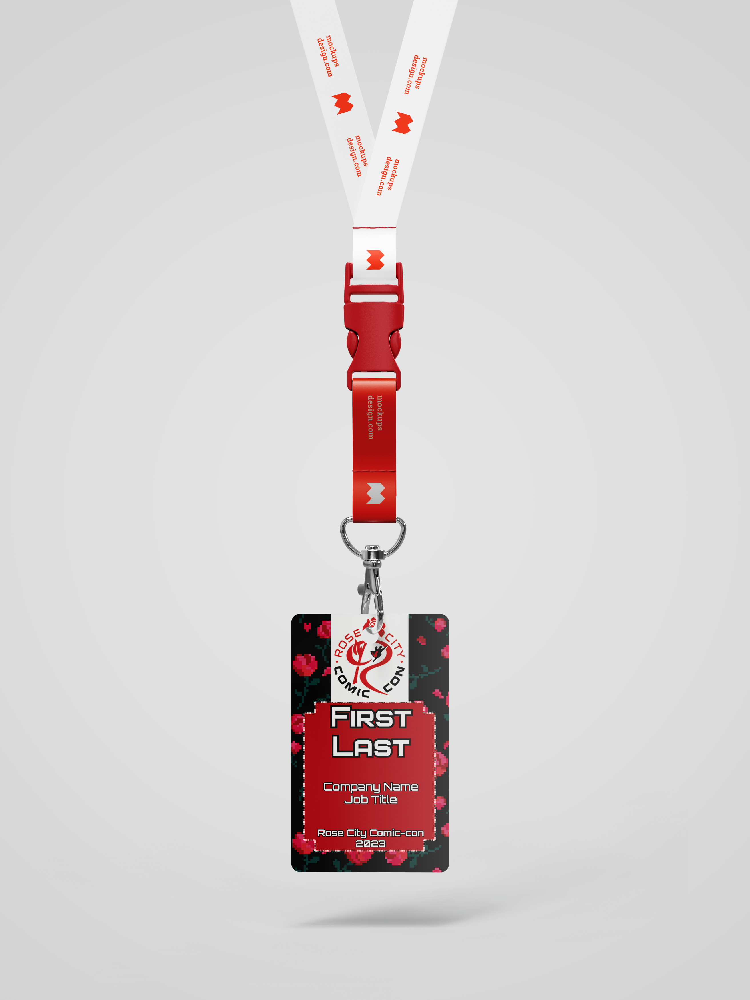
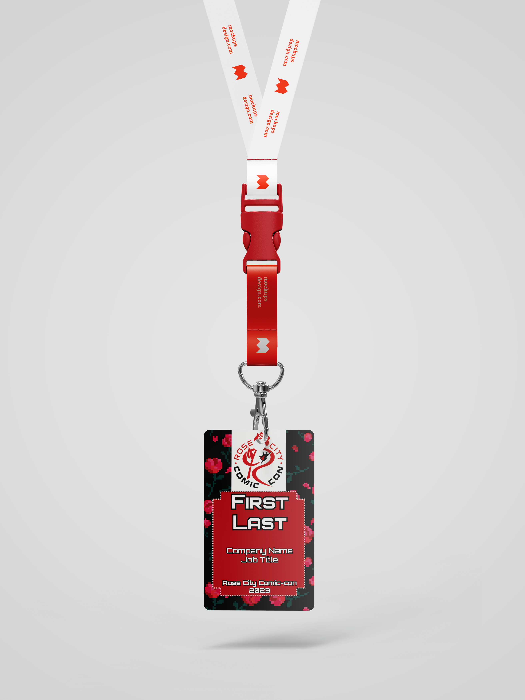
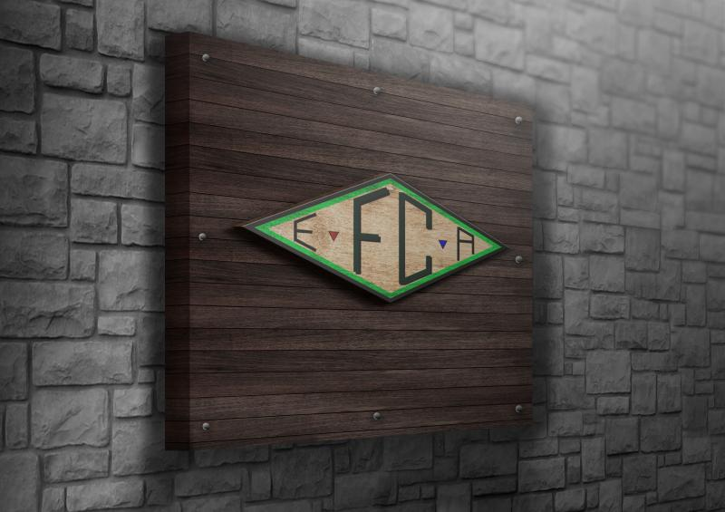
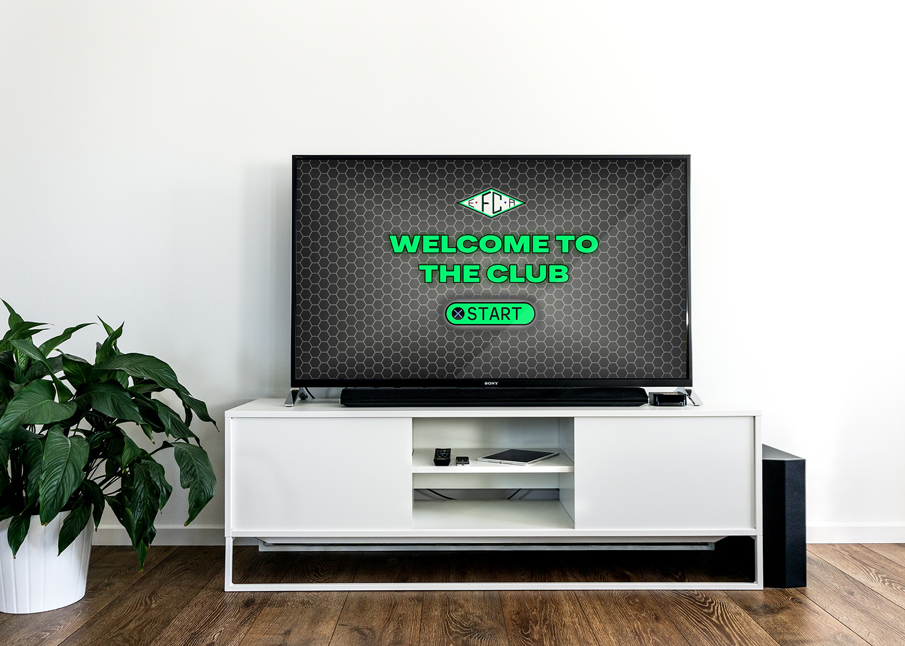
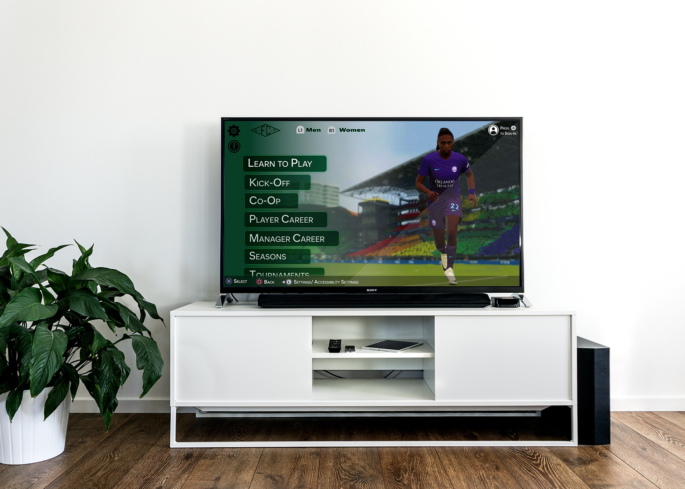
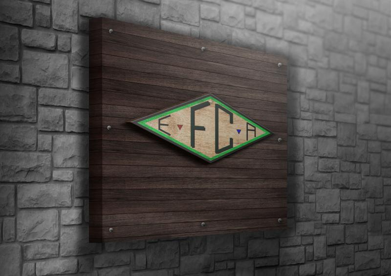
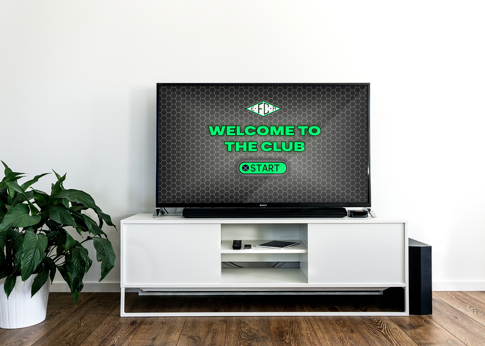
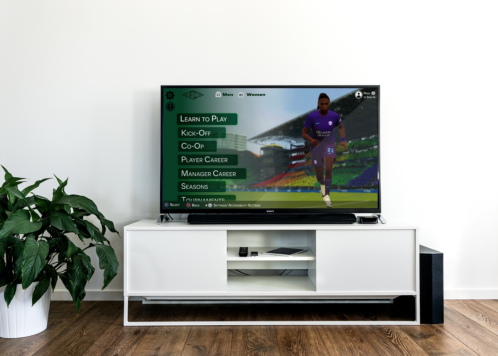

Hi, I am Saylor Brock-Allison
A Portland, Oregon-based graphic designer with a focus on print, digital, and branding. I'm passionate about creating bold, meaningful visuals that elevate stories, especially in the world of women's sports. Whether it's building a brand from the ground up or crafting a campaign that captures attention, I bring intention and energy to every project.
When I'm not designing, you can find me hiking Pacific Northwest trails, cheering on the Portland Thorns, or spending time with my wife, our dog Queenie, and our mischievous cat Luci.
My Work
Rooted in Rose City: A Re-brand That Reconnects Fandom to Portland's Identity
 


Rose City Comic Con is Portland's premier pop culture convention, celebrating comics, cosplay, gaming, and fan communities. This rebrand reinforced the city's identity and gave fans something to rally behind.
Image descriptions from left-to-right, top-to-bottom.
Pamphlet: Easy-to-read guide with schedules, guests, and sponsors.
Table Tents: Name and image displays for celebrity guests.
ID Badges: Color-coded badges for attendees and staff.
Business Card: Minimalist teaser for next year's event.
Process
- Sketched concepts combining retro and modern iconography
- Researched local symbolism and other con conventions
- Created posters, signage, badges, and collateral
Results
The refreshed brand unified the convention experience and embedded it in Portland pride—delighting attendees and stakeholders alike.
NWSL Mobile Experience: Designing for Fans, Not Just Scores

The National Women's Soccer League lacked a mobile experience worthy of its momentum. This redesign turns the app into a dynamic hub for fans to follow, support, and engage with the league.
Pages shown in app:
Home: Personalized feed with quick team switching and latest league news.
Match Discovery: Location-aware view with instant ticket purchasing.
Standings Page: Clean interface with toggleable team and player stats.
Roster Page: Visual breakdown of players by position and performance.
Problem
The existing app was outdated, visually inconsistent, and not tailored for team-following or fan engagement.
Process
- Benchmarked top-performing sports apps (NBA, WNBA, etc.)
- Identified user needs from reviews and forums
- Designed UI with NWSL branding, including:
- Personalized team feeds
- Match discovery with ticket links
- Live scores and standings
- Prototyped and animated using After Effects
Results
The new app concept increases usability, brand cohesion, and fan loyalty with a smoother UX and clearer content architecture.
EA FC25: Together We Play
 





EA FC25 introduces a bold shift: female career mode, inclusive design, and shared spotlight. This redesign expanded the brand’s reach beyond its traditional audience.
Image descriptions left-to-right, top-to-bottom
Game Cover: Featuring dual athletes to reflect the brand's inclusivity shift.
Logo: Modular symbol made from in-game icons, emphasizing diversity and unity
Start Screen: Visual system for onboarding and gender selection.
Onboarding Flow: Redesigned menu with easy access to tutorials and gender selection
Problem
Previous versions sidelined women and solo play. The challenge was to build a campaign that spoke to modern gamers and celebrated diversity.
Process
- Analyzed FIFA history and competitors
- Created inclusive logo variations
- Developed campaign assets and UI features:
- Gender toggle
- Social features
- Onboarding experience
- Built branded UI mockups and screen flows
Results
Repositioned EA FC25 as a game for everyone. Featuring players like Jude Bellingham and Sophia Wilson on the cover reinforced inclusion and shared success.